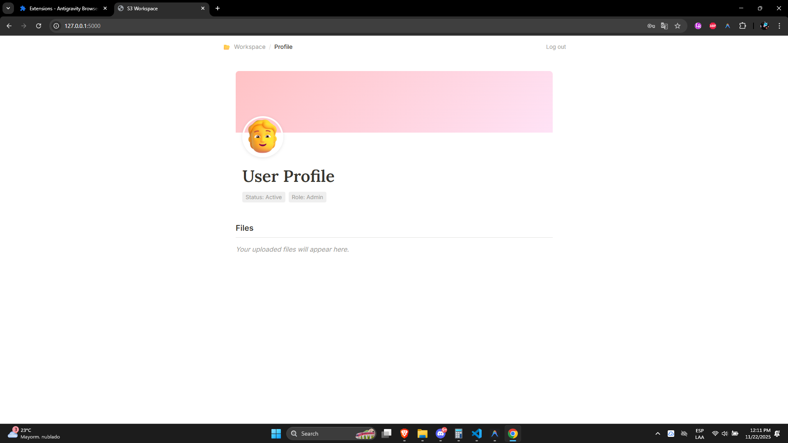
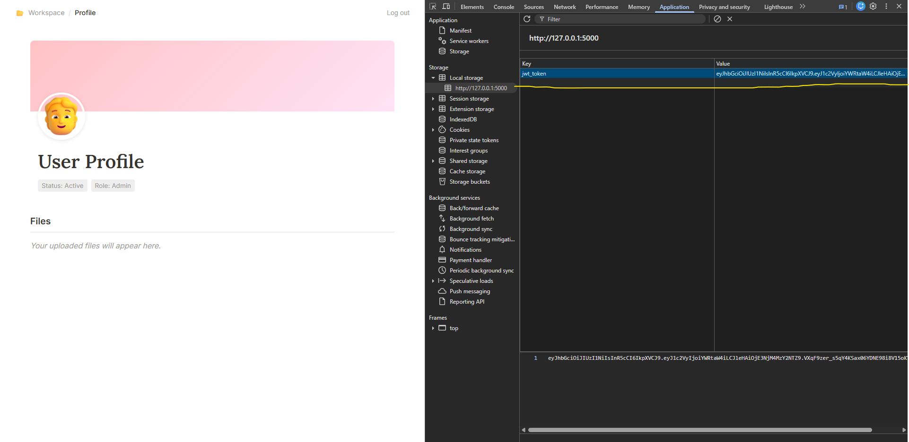
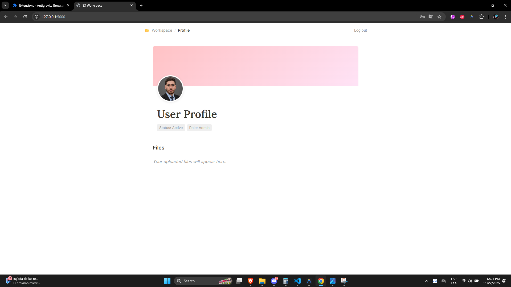
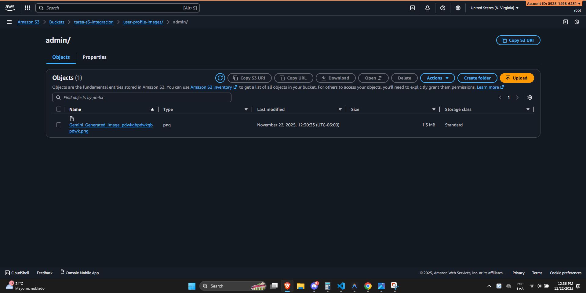

Introducción
Este laboratorio muestra cómo crear una aplicación web sencilla con Flask que permite a un usuario autenticado subir y visualizar su foto de perfil usando Amazon S3. Se emplea JWT para la autenticación y se persiste la referencia del archivo en un archivo JSON (user_profiles.json). El objetivo es comprender la generación de URLs firmadas (presigned URLs), la gestión de CORS y la interacción cliente‑servidor mediante fetch API.
Flask 2.2.5
Python 3.11+
AWS S3 1.28.0
JWT Auth

Desarrollo del ejercicio
1. Configuración del entorno
python -m venv venv && .\venv\Scripts\activatepip install -r requirements.txt- Variables de entorno en
.env(AWS_ACCESS_KEY_ID,AWS_SECRET_ACCESS_KEY,BUCKET_NAME,SECRET_KEY).
2. Backend (app.py)
- Ruta
/logingenera un JWT y lo devuelve al cliente. - Ruta
/api/upload-urlcrea una URL presigned PUT para subir la foto auser-profile-images/<user>/<filename>. - Ruta
/api/read-urlgenera una URL presigned GET para leer la foto. - Ruta
/api/save-profileguarda la clave del archivo enuser_profiles.json. - Ruta
/api/medevuelve elfileKeyasociado al usuario. - Al iniciar la aplicación se aplica la política CORS al bucket.
3. Frontend (static/script.js)
- Al cargar la página se verifica el token en
localStorage. - Se llama a
/api/mepara obtener lafileKeyy, si existe, se solicita la URL de lectura y se muestra la foto. - El proceso de subida incluye:
- Obtener la URL presigned.
- Subir el archivo a S3.
- Obtener la URL de lectura.
- Guardar la clave en el backend.
- Actualizar la UI.
- El token se almacena en LocalStorage:

4. Persistencia
user_profiles.jsonmantiene la relaciónusername → fileKey.- Al recargar la página la foto se recupera automáticamente.

5. Resultado en S3
- La foto se almacena en el bucket bajo la ruta
user-profile-images/...y se puede verificar en la consola de AWS.

Conclusión
- Presigned URLs permiten que el cliente suba y descargue archivos directamente a S3 sin exponer credenciales.
- JWT + LocalStorage brinda una autenticación sin estado que el frontend puede reutilizar en cada petición.
- Persistir la referencia del archivo en un JSON sencillo es suficiente para un laboratorio, pero en producción se usaría una base de datos.
- Configurar CORS en el bucket es esencial para evitar bloqueos del navegador.
- La arquitectura separa claramente la lógica de negocio (Flask) de la UI (HTML/JS), facilitando pruebas y mantenimiento.
Este proyecto es una base para ampliar funcionalidades como manejo de múltiples usuarios, versiones de imágenes o integración con bases de datos reales.